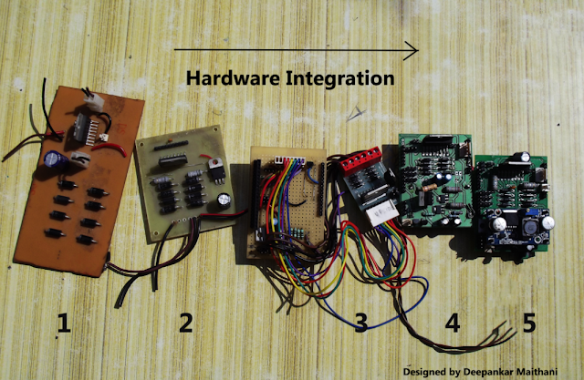
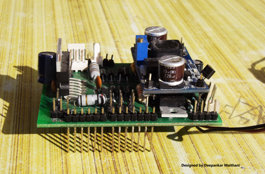
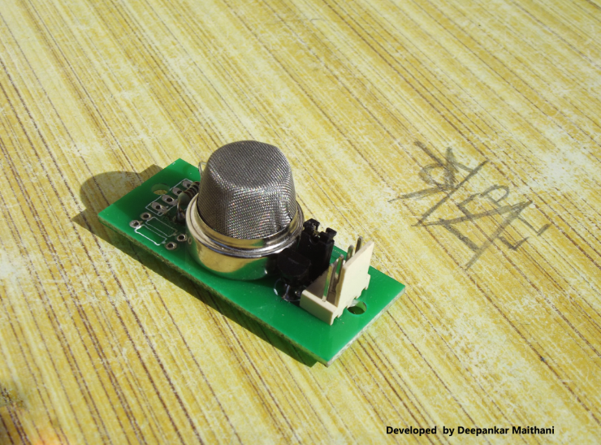
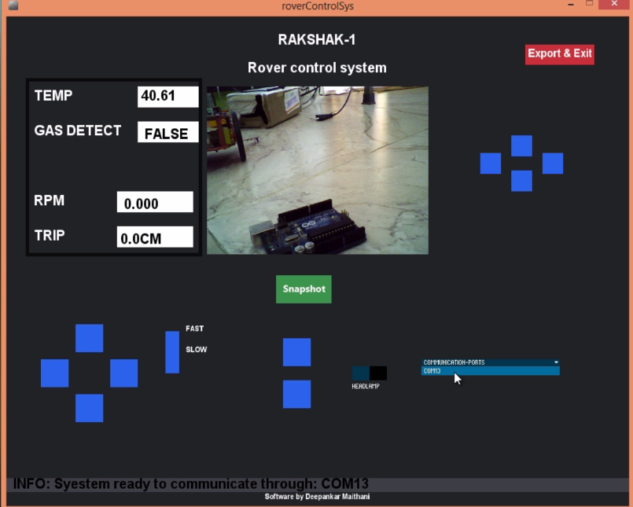

I thought of creating an open source system for data gathering in a hazardous situation not fit
for directly accessing by a human. It is
inspired by all terrain robot Viper by Elbit and several other robots like rhex and sand flee by
bostan dynamics
Video Demonstration of Features
Suppose there is a major fire outbreak and after the fire outbreak the building is not safe to be
entered becoz the iron bars melt and walls become weak so it has to be checked by the experts so
that they can certify it to be safe. Now getting inside the building is not safe for the experts
too, why not send a robot that could be controlled from outside,go in and send the video and images
so that the team has the idea of the kind of damage and cracks and can further make a decision.
Moreover the rover can also sense fumes and other toxic gas levels.As the weight of the rover will
be lesser than the human weight it will further reduce the chances of collapsing the building.
Can also be tweaked to gather data from radioactive ,industrial gas leakage situation or for any
other situation where there are no sensors already installed.
Further,There is a thought process behind creating any new thing a journey and a story of how you
face hurdles and how you tackle them. In
this post i will share about how i created the rakshak-1 system
Hardware Integration
The board numbered 1 is the first board on which i tested various motors . The IC used is L298 by
STmicroelectronics. The board is a paper epoxy board designed on eagle and completely fabricated at
home using the laser printer and hot iron method.
Once i found it good i went for a more compact design that is numbered as 2 this is a glass epoxy
board ,i ran two of my robots using this board.

I wanted to make a shield(A shield is an arduino compatible pin configuration) so that the hardware
can be neatly stacked on the arduino uno .I came across a motor driver on an online shop and i found
the design to be very compact. After running the motors of Rakshak-1 on it i understood that it is a
overuse of resources and space to go with big power diodes IN5408 for blocking the spikes produced
by motors rather a IN4007 would suffice and would make the design compact.
To make the system up and running i needed to have a hardware which can provide different voltages
and can give enough power to drive the motors and power the sensors, micro-controller and other
peripherals. Initially the GUI software is tested with the hardware arrangement numbered as 3. The
shield was handwired and i have used a 11.1 v 1500mAh lithium ion battery to power the system. If
you would look closely there are 4 resistors of quarter watt attached in parallel to drop the
voltage from 11.1 to 9v This 9v is fed to the motors and 5v regulator provides power to arduino ,IC
operations and LM35. Since i couldnot find a single resistor of high wattage adding 4 in parallel
solved the wattage problem but still using resistors to drop voltage when current drawn is high is
an inefficient method. Hence i decided to use a buck configuration in the next design of shield.
A coil is an integral part of a buck circuitry,but soon i realised that finding a coil of particular
value is a uphill task ,i searched on element14 and a few other places but an exact coil was very
hard to find ,moreover the price of coil was almost of the same price as that of a buck convertor
module that include an IC ,some capacitors LED. So i initially though i will buy a module will
desolder the coil and use it on the board i will design but there was another thing that was going
to put me in a tight spot and that was the board house. The board house that i had easy access to
still follows manual processes so i couldn't route the wires too close,too thin, moreover i have to
use the locally available through hole components because the SMD components are harder to find
locally and the vender wouldn't make something available to you until you order in bulk. So finally
the most practical solution was to buy the buck converter module and use it as a component. So i
designed the pads where i can fix the module. The only SMD component that i used are the LM1117
regulators which were not only small in size but can also provide current upto 800mA.
After all this came the design number 4 , i had to add a component externally and it worked but i
missed a few design consideration as i designed it in a hurry. In the next design no 5 i fixed those
things and finally got something good .
The shield that i designed on Eagle CAD

Custom Shield stacked on top of Arduino and seedstudio Xbee shield
Temperature and Gas Sensor

Software
The software on the onboard micro-controller turns on and turns off the geared DC motors ,headlights
and set the position of servo motors depending upon the data received by the GUI. It also samples
the temperature sensor and gas sensor data using its 10 bit successive approximation type ADC. It
also measures the number of revolutions of motor by using a hardware setup which includes a hall
effect sensor by allegro and a magnetic ring, the ring has 8 poles north and south places
alternatively the ring is mounted on the output shaft of the motor when one of the two pole passes
the output of the sensor turns high and when other one passes the output becomes low. These state
changes are counted by the micro controller over a period of time using the interrupts and then are
sent to the GUI to use this data to find out the RPM and distance by taking into account the
Circumference of wheel. I have tried to keep the manipulation on the GUI side as the microcontroller
is a low end 8 bit microcontroller working at just 16Mhz.
The GUI software is written using open source processing development environment. This GUI software
can run on MAC, Windows or Linux.

The current position of various elements on the GUI have come up after a number of iterations and
after looking at the ease of user experience i found this placement to be most suitable.One
challenge in creating the software was to manage the sending of commands and receiving of data. Xbee
series 2 modules are used for transmitting and receiving the data and xbee are half duplex
.Receiving the data and transmitting the commands in real time would require a full duplex system.
So an approach is used where just for the short time while command is sent the channel is occupied
,rest of the time the time the channel is free to receive the incoming data. The microcontroller is
set to send the sensor data once every second . This way while we have slight delay of 1 sec while
receiving the data the rover can be controlled instantaneously,so it is not that you will have to
stop the rover to receive the sensor value ,the usercan keep on moving it and make it go wherever he
wants and he will keep on receiving the data too. It is kind of parallel approach,may be in future
versions things can be improved even more.
3D Printing
There are several parts of the robot chasis which are manufactured using 3d printing. This section
shows
the process